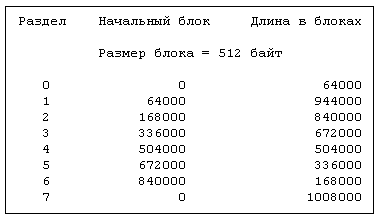

Так сложилось исторически, что дисковые устройства в системах UNIX разбивались на разделы, содержащие различные файловые системы, что означало "деление [дискового] пакета на несколько управляемых по-своему частей" (см. [System V 84b]). Например, если на диске располагаются четыре файловые системы, администратор может оставить одну из них несмонтированной, одну смонтировать только для чтения, а две других только для записи. Несмотря на то, что все файловые системы сосуществуют на одном физическом устройстве, пользователи не могут ни обращаться к файлам немонтированной файловой системы, используя методы доступа, описанные в главах 4 и 5, ни записывать файлы в файловые системы, смонтированные только для чтения. Более того, так как каждый раздел (и, следовательно, файловая система) занимает на диске смежные дорожки и цилиндры, скопировать всю файловую систему легче, чем в том случае, если бы раздел занимал участки, разбросанные по всему дисковому тому.
Дисковый драйвер транслирует адрес файловой системы, состоящий из логического номера устройства и номера блока, в точный номер дискового сектора. Драйвер получает адрес одним из следующих путей: либо стратегическая процедура использует буфер из буферного пула, заголовок которого содержит номера устройства и блока, либо процедуры чтения и записи передают логический (младший) номер устройства в качестве параметра; они преобразуют адрес смещения в байтах, хранящийся в пространстве задачи, в адрес соответствующего блока. Дисковый драйвер использует номер устройства для идентификации физического устройства и указания используемого раздела, обращаясь при этом к внутренним таблицам для поиска сектора, отмечающего начало раздела на диске. Наконец, он добавляет номер блока в файловой системе к номеру блока, с которого начинается каждый сектор, чтобы идентифицировать сектор, используемый для ввода-вывода.

Рисунок 10.7. Разделы на диске RP07
Исторически сложилось так, что размеры дисковых разделов устанавливаются в зависимости от типа диска. Например, диск DEC RP07 разбит на разделы, характеристика которых приведена на Рисунке 10.7. Предположим, что файлы "/dev/dsk0", "/dev/dsk1", "/dev/dsk2" и "/dev/dsk3" соответствуют разделам диска RP07, имеющим номера от 0 до 3, и имеют аналогичные младшие номера. Пусть размер логического блока в файловой системе совпадает с размером дискового блока. Если ядро пытается обратиться к блоку с номером 940 в файловой системе, хранящейся в "/dev/dsk3", дисковый драйвер переадресует запрос к блоку с номером 336940 (раздел 3 начинается с блока, имеющего номер 336000; 336000 + 940 = 336940) на диске.
Размеры разделов на диске варьируются и администраторы располагают файловые системы в разделах соответствующего размера: большие файловые системы попадают в разделы большего размера и т. д. Разделы на диске могут перекрываться. Например, разделы 0 и 1 на диске RP07 не пересекаются, но вместе они занимают блоки с номерами от 0 до 1008000, то есть весь диск. Раздел 7 так же занимает весь диск. Перекрытие разделов не имеет значения, поскольку файловые системы, хранящиеся в разделах, размещаются таким образом, что между ними нет пересечений. Иметь один раздел, включающий в себя все дисковое пространство, выгодно, поскольку весь том можно быстро скопировать.
Использование разделов фиксированного состава и размера ограничивает гибкость дисковой конфигурации. Информацию о разделах в закодированном виде не следует включать в дисковый драйвер, но нужно поместить в таблицу содержимого дискового тома. Однако, найти общее место на всех дисках для размещения таблицы содержимого дискового тома и сохранить тем самым совместимость с предыдущими версиями системы довольно трудно. В существующих реализациях версии V предполагается, что блок начальной загрузки первой из файловых систем на диске занимает первый сектор тома, хотя по логике это, казалось бы, самое подходящее место для таблицы содержимого тома. И все же дисковый драйвер должен иметь закодированную информацию о месте расположения таблицы содержимого тома для каждого диска, не препятствуя существованию дисковых разделов переменного размера.
В связи с тем, что для системы UNIX является типичным высокий уровень дискового трафика, драйвер диска должен максимизировать передачу данных с тем, чтобы обеспечить наилучшую производительность всей системы. Новейшие дисковые контроллеры осуществляют планирование выполнения заданий, требующих обращения к диску, позиционируют головку диска и обеспечивают передачу данных между диском и центральным процессором; иначе это приходится делать дисковому драйверу.
Сервисные программы могут непосредственно обращаться к диску в обход стандартного метода доступа к файловой системе, рассмотренного в главах 4 и 5, как пользуясь блочным интерфейсом, так и не прибегая к структурированию данных. Непосредственно работают с диском две важные программы - mkfs и fsck. Программа mkfs форматирует раздел диска для файловой системы UNIX, создавая при этом суперблок, список индексов, список свободных дисковых блоков с указателями и корневой каталог новой файловой системы. Программа fsck проверяет целостность существующей файловой системы и исправляет ошибки, как показано в главе 5.
Рассмотрим программу, приведенную на Рисунке 10.8, в применении к файлам "/dev/dsk15" и "/dev/rdsk15", и предположим, что команда ls выдала следующую информацию:
ls -1 /dev/dsk15 /dev/rdsk15
br-------- 2 root root 0,21 Feb 12 15:40 /dev/dsk15
crw-rw---- 2 root root 7,21 Mar 7 09:29 /dev/rdsk15
Отсюда видно, что файл "/dev/dsk15" соответствует устройству блочного типа, владельцем которого является пользователь под именем "root", и только пользователь "root" может читать с него непосредственно. Его старший номер 0, младший - 21. Файл "/dev/rdsk15" соответствует устройству посимвольного ввода-вывода, владельцем которого является пользователь "root", однако права доступа к которому на запись и чтение есть как у владельца, так и у группы. Его старший номер - 7, младший - 21. Процесс, открывающий файлы, получает доступ к устройству через таблицу ключей устройств ввода-вывода блоками и таблицу ключей устройств посимвольного ввода-вывода, соответственно, а младший номер устройства 21 информирует драйвер о том, к какому разделу диска производится обращение, например, дисковод 2, раздел 1. Поскольку младшие номера у файлов совпадают, они ссылаются на один и тот же раздел диска, если предположить, что это одно устройство (***). Таким образом, процесс, выполняющий программу, открывает один и тот же драйвер дважды (используя различные интерфейсы), позиционирует головку к смещению с адресом 8192 и считывает данные с этого места. Результаты выполнения операций чтения должны быть идентичными при условии, что работает только одна файловая система.
#include "fcntl.h"
main()
{
char buf1[4096], buf2[4096]
int fd1, fd2, i;
if (((fd1 = open("/dev/dsk5/", O_RDONLY)) == -1)
((fd2 = open("/dev/rdsk5", O_RDONLY)) == -1))
{
printf("ошибка при открытии\n");
exit();
}
lseek(fd1, 8192L, 0);
lseek(fd2, 8192L, 0);
if ((read(fd1, buf1, sizeof(buf1)) == -1)
(read(fd2, buf2, sizeof(buf2)) == -1))
{
printf("ошибка при чтении\n");
exit();
}
for (i = 0; i < sizeof(buf1); i++)
if (buf1[i] != buf2[i])
{
printf("различие в смещении %d\n", i);
exit();
}
printf("данные совпадают\n");
}
|
Рисунок 10.8. Чтение данных с диска с использованием блочного
интерфейса и без структурирования данных
Программы, осуществляющие чтение и запись на диск непосредственно, представляют опасность, поскольку манипулируют с чувствительной информацией, рискуя нарушить системную защиту. Администраторам следует защищать интерфейсы ввода-вывода путем установки прав доступа к файлам дисковых устройств. Например, дисковые файлы "/dev/dsk15" и "/dev/rdsk15" должны принадлежать пользователю с именем "root", и права доступа к ним должны быть определены таким образом, чтобы пользователю "root" было разрешено чтение, а всем остальным пользователям и чтение, и запись должны быть запрещены.
Программы, осуществляющие чтение и запись на диск непосредственно, могут также нарушить целостность данных в файловой системе. Алгоритмы файловой системы, рассмотренные в главах 3, 4 и 5, координируют выполнение операций ввода-вывода, связанных с диском, тем самым поддерживая целостность информационных структур на диске, в том числе списка свободных дисковых блоков и указателей из индексов на информационные блоки прямой и косвенной адресации. Процессы, обращающиеся к диску непосредственно, обходят эти алгоритмы. Пусть даже их программы написаны с большой осторожностью, проблема целостности все равно не исчезнет, если они выполняются параллельно с работой другой файловой системы. По этой причине программа fsck не должна выполняться при наличии активной файловой системы.
Два типа дискового интерфейса различаются между собой по использованию буферного кеша. При работе с блочным интерфейсом ядро пользуется тем же алгоритмом, что и для файлов обычного типа, исключение составляет тот момент, когда после преобразования адреса смещения логического байта в адрес смещения логического блока (см. алгоритм bmap в главе 4) оно трактует адрес смещения логического блока как физический номер блока в файловой системе. Затем, используя буферный кеш, ядро обращается к данным, и, в конечном итоге, к стратегическому интерфейсу драйвера. Однако, при обращении к диску через символьный интерфейс (без структурирования данных), ядро не превращает адрес смещения в адрес файла, а передает его немедленно драйверу, используя для передачи рабочее пространство задачи. Процедуры чтения и записи, входящие в состав драйвера, преобразуют смещение в байтах в смещение в блоках и копируют данные непосредственно в адресное пространство задачи, минуя буферы ядра.
Таким образом, если один процесс записывает на устройство блочного типа, а второй процесс затем считывает с устройства символьного типа по тому же адресу, второй процесс может не считать информацию, записанную первым процессом, так как информация может еще находиться в буферном кеше, а не на диске. Тем не менее, если второй процесс обратится к устройству блочного типа, он автоматически попадет на новые данные, находящиеся в буферном кеше.
При использовании символьного интерфейса можно столкнуться со странной ситуацией. Если процесс читает или пишет на устройство посимвольного ввода-вывода порциями меньшего размера, чем, к примеру, блок, результаты будут зависеть от драйвера. Например, если производить запись на ленту по 1 байту, каждый байт может попасть в любой из ленточных блоков.
Преимущество использования символьного интерфейса состоит в скорости, если не возникает необходимость в кешировании данных для дальнейшей работы. Процессы, обращающиеся к устройствам ввода -вывода блоками, передают информацию блоками, размер каждого из которых ограничивается размером логического блока в данной файловой системе. Например, если размер логического блока в файловой системе 1 Кбайт, за одну операцию ввода-вывода может быть передано не больше 1 Кбайта информации. При этом процессы, обращающиеся к диску с помощью символьного интерфейса, могут передавать за одну дисковую операцию множество дисковых блоков, в зависимости от возможностей дискового контроллера. С функциональной точки зрения, процесс получает тот же самый результат, но символьный интерфейс может работать гораздо быстрее. Если воспользоваться примером, приведенным на Рисунке 10.8, можно увидеть, что когда процесс считывает 4096 байт, используя блочный интерфейс для файловой системы с размером блока 1 Кбайт, ядро производит четыре внутренние итерации, на каждом шаге обращаясь к диску, прежде чем вызванная системная функция возвращает управление, но когда процесс использует символьный интерфейс, драйвер может закончить чтение за одну дисковую операцию. Более того, использование блочного интерфейса вызывает дополнительное копирование данных между адресным пространством задачи и буферами ядра, что отсутствует в символьном интерфейсе.
(***) Не существует иного способа установить, что символьный и блочный драйверы ссылаются на одно и то же устройство, кроме просмотра таблиц системной конфигурации и текста программ драйвера.
Предыдущая глава || Оглавление || Следующая глава